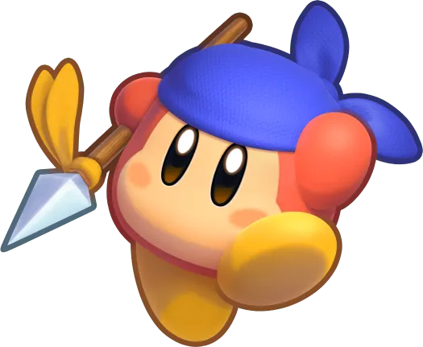

별의 커비 슈퍼 디럭스부터 등장한 엘리트급 웨이들 디로, 기존 웨이들 디들과는 달리 청색 반다나를 쓰고 몸 색상도 다홍색처럼 조금 더 붉은 색상을 띄고 있다. 또한 물에 입수해도 여유롭게 헤엄치고, 한 번 공격 당하거나 불에 닿아도 체력이 남아있는 한 살아남을 수 있는 특별한 웨이들 디다. 주로 쓰는 무기는 창. 로보보 플래닛에선 웨이들 디 amiibo를 인식하면 이 캐릭터를 코스프레하며 파라솔 능력을 얻거나, 커비 배틀 디럭스!에서도 파라솔을 사용한다.

Wii까지는 별다른 이름없이 그냥 웨이들 디라고만 나왔었으나 일반 웨이들 디들과 구분하기 위함인지 트리플 디럭스부터 반다나 웨이들 디라는 이름이 생겼다.